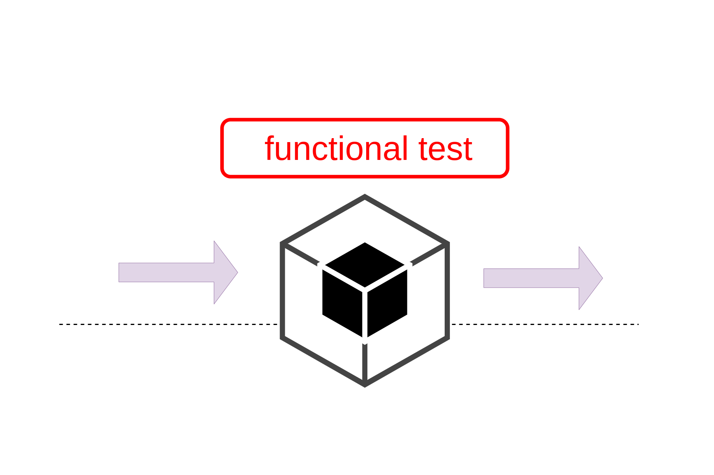

Entendendo o Teste Funcional
O teste funcional é uma das abordagens mais utilizadas para garantir que o software esteja de acordo com o que foi especificado. Neste tipo de teste, tratamos o programa como uma caixa-preta: avaliamos somente suas entradas e saídas, sem nos preocupar com sua lógica interna.
Por que isso importa?
Porque essa técnica permite verificar se os requisitos do sistema estão sendo realmente atendidos. Mesmo sem conhecer o código, conseguimos identificar se o comportamento do software está correto para diferentes cenários.
Particionamento de Equivalência
Um dos critérios mais usados no teste funcional é o particionamento de equivalência, que divide o domínio de entrada em classes onde os dados se comportam de forma semelhante. Assim, conseguimos escolher poucos casos de teste representativos e ainda assim cobrir bem o sistema.
Análise do Valor Limite
Outra técnica complementar é a análise de valor limite, que foca nos extremos dos intervalos — já que os erros costumam aparecer justamente nessas bordas.
Aplicação prática
Imagine um programa que aceita números de 1 a 20. Em vez de testar todos os números, você testaria:
- Um número dentro do intervalo (ex: 10)
- Os limites (1 e 20)
- Valores fora do intervalo (0 e 21)
Simples e eficiente!
“Nem sempre é possível testar tudo — por isso, escolher bem os casos de teste faz toda a diferença.”
O teste funcional é uma estratégia poderosa porque é baseada nos requisitos do sistema, sendo útil em diferentes fases do desenvolvimento e para qualquer linguagem de programação.
Conteúdo baseado no Capítulo 2 de “Introdução ao Teste de Software”
Autores: Márcio Delamaro, José Maldonado e Mario Jino.